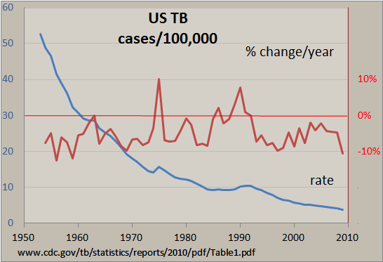
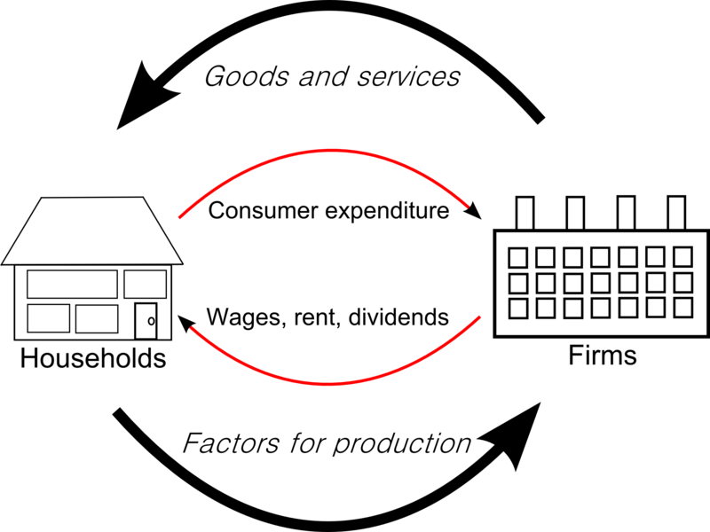
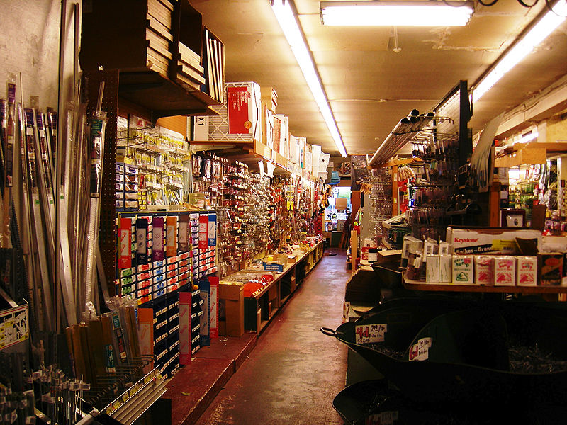

Observation and recording of specific phenomena of concern
4 Empirical Investigation
5 Time Series Data
Observations of how a numerical variable changes over time

6 Correlation Does Not Imply Causation
Umbrellas do not cause rain!
7 Theoretical Investigation
8 Theoretical Investigation
Analysis based in abstract thought
9 Model
An analytical tool that highlights some aspects of reality while ignoring others
10 Ceteris Paribus
Other things being equal
11 Historical Investigation
12 Economic Tradeoffs
Life consists of tradeoffs
13 Abundance
Would you pay for fresh water if you lived here?
14 Scarcity
Would you pay for fresh water if you lived here?
15 Production Possibilities Frontier
16 Opportunity Cost
The value of the best alternative that is foregone when a choice is made: will you do your homework or go to a nightclub?
17 Efficiency
Uses the minimum of resources to achieve the desired result.
18 Tradeoffs Over Time
19 Slide 19
Quantity of Output 1
Quantity of Output 2
PPF with Additional Resources or Technological Progress
Original PPF
20 Slide 20
A
Quantity of Resource-Depleting Production
Quantity of Maintenance
B
21 Slide 21
Quantity of Output 1
Quantity of Output 2
Future PPF with High Resource Maintenance Now
Future PPF with High Resource Depletion Now
22 Technological Progress
23 Discussion
Suppose that your study time can be allocated either to studying for this course or to studying for another course. Your two “outputs” are your grades in each course. Draw a production possibilities curve for these two outputs.
24 The Role of Markets
25 The Meaning of Markets
Can mean a physical place.
26 The Meaning of Markets
Can mean institutions.
27 The Meaning of Markets
Can mean the abstract idea of a pure exchange economy.
28 The Basic Neoclassical Model
A simple, mechanical model that portrays the economy as a collection of profit-maximizing firms and utility-maximizing households interacting through perfectly competitive markets.
29 Circular Flow in the Economy

30 The Advantages of Markets

31 Decentralized Planning
These prices are set by each company, using locally available information and local decisions.